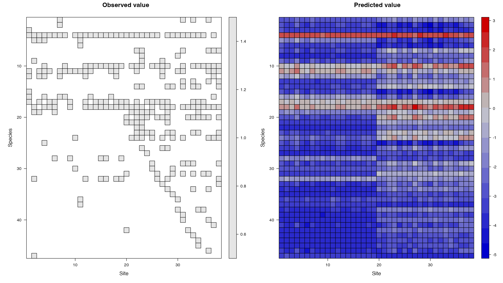
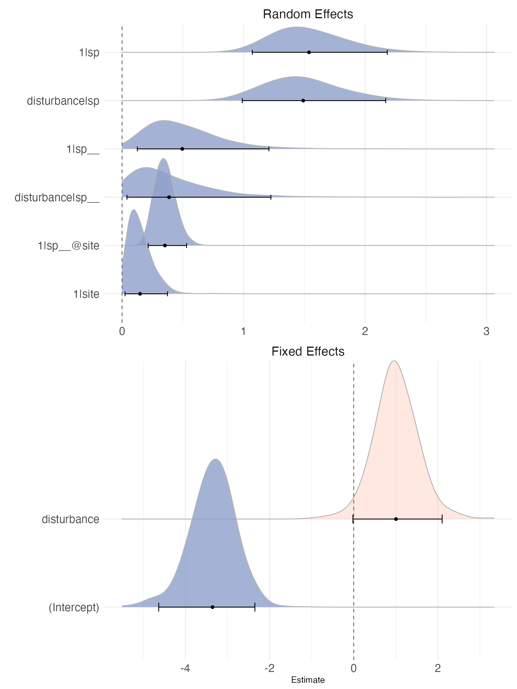
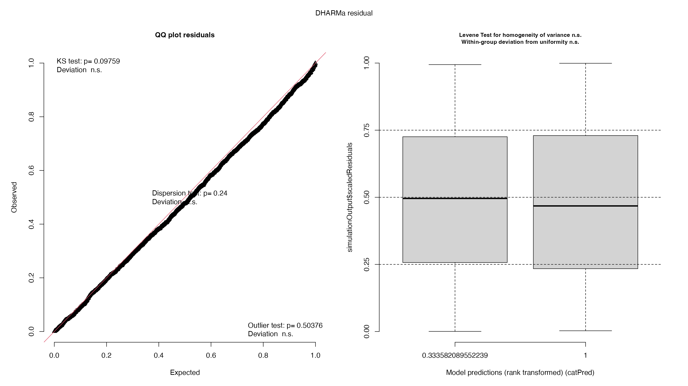
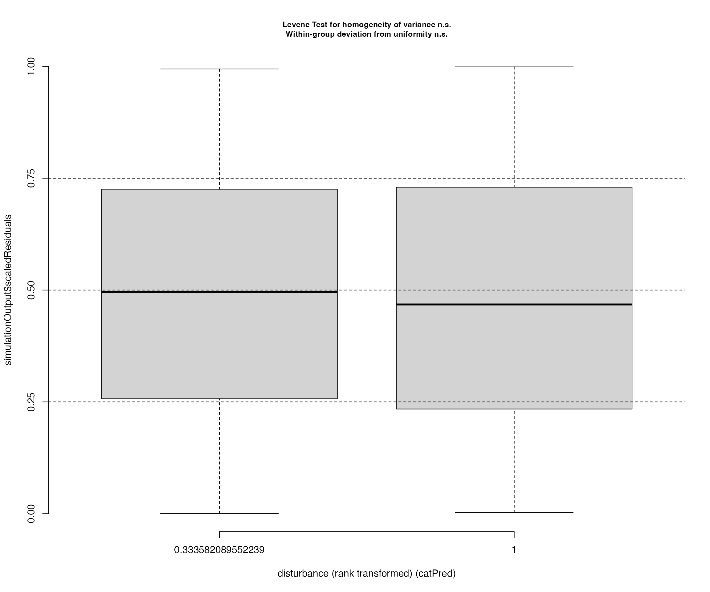
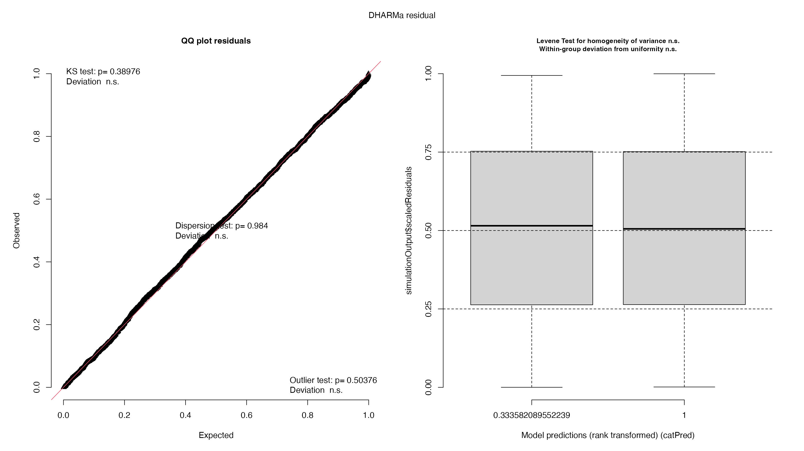

pglmm example with empirical data
Source:vignettes/phyr_example_empirical.Rmd
phyr_example_empirical.RmdcommunityPGLMM Example on Simple Empirical Dataset
This vignette will show a complete analysis example for
pglmm on a simple empirical dataset. The dataset is taken
from Dinnage
(2009). Here we will demonstrate how to fit a PGLMM, including main
phylogenetic effects, nested phylogenetic effects, as well as including
environmental covariates. First let’s load the dataset and take a look
at what we have. The data is included in phyr, so we can
just call data(oldfield) to load it.
Modelling Old Field Plants as a Function of Phylogeny and Disturbance
library(phyr)
library(ape)
library(dplyr)
#>
#> Attaching package: 'dplyr'
#> The following object is masked from 'package:ape':
#>
#> where
#> The following objects are masked from 'package:stats':
#>
#> filter, lag
#> The following objects are masked from 'package:base':
#>
#> intersect, setdiff, setequal, union
data("oldfield")The data is a list with two elements. The first element is a phylogeny containing 47 species of plants (all herbaceous forbs) that live in old field habitats in Southern Ontario, Canada. Oldfield habitats typically are found in areas that were formerly cultivated but are now abandoned. This is often considered a successional stage between farmland and secondary forest. These data come from plots that had experienced two “treatments”: one set of plots had been disturbed by field ploughing within a few years of sampling, whereas the other set had not been disturbed in this way recently. Let’s have a look at the phylogeny and data.
plot(oldfield$phy)
head(oldfield$data, 40)
#> # A tibble: 40 × 7
#> site_orig habitat_type sp abundance disturbance site pres
#> <int> <chr> <chr> <int> <dbl> <chr> <int>
#> 1 1 undisturbed Daucus_carota 0 0 1_undisturb… 0
#> 2 6 undisturbed Daucus_carota 0 0 6_undisturb… 0
#> 3 7 undisturbed Daucus_carota 0 0 7_undisturb… 0
#> 4 9 undisturbed Daucus_carota 0 0 9_undisturb… 0
#> 5 10 undisturbed Daucus_carota 0 0 10_undistur… 0
#> 6 11 undisturbed Daucus_carota 0 0 11_undistur… 0
#> 7 13 undisturbed Daucus_carota 1 0 13_undistur… 1
#> 8 15 undisturbed Daucus_carota 0 0 15_undistur… 0
#> 9 16 undisturbed Daucus_carota 0 0 16_undistur… 0
#> 10 18 undisturbed Daucus_carota 0 0 18_undistur… 0
#> # ℹ 30 more rowsWith these data we are interested in asking whether there is
phylogenetic structure in the distribution of these species, as well as
whether disturbance has any overall effects. To do this we will specify
two different phylogenetic effects in our pglmm, which uses
a syntax similar to lmer and glmer in the
lme4 package for specifying random effects. We also include
site-level random effects to account for the paired design of the
experiment. We will start by modeling just presence and absence of
species (a binomial model). Since phyr 1.5.0, binomial models are fitted
by maximum likelihood with the Laplace approximation
(method = "Laplace", with the same estimates as
lme4::glmer() and glmmTMB()), using the sparse
precision matrix of the phylogeny, so this model takes about a second.
This is the full model specification:
mod <- phyr::pglmm(pres ~ disturbance + (1 | sp__) + (1 | site) +
(disturbance | sp__) + (1 | sp__@site),
data = oldfield$data,
cov_ranef = list(sp = oldfield$phy),
family = "binomial")Here, we specified an overall phylogenetic effect using
sp__, which also automatically includes a nonphylogenetic
i.i.d. effect of species. phyr finds the linked
phylogenetic data because we specified the phylogeny in the
cov_ranef argument, giving it the name sp
which matches sp__ but without the underscores. We can
include any number of phylogenies or covariance matrices in this way,
allowing us to model multiple sources of covariance in one model. In
this example, however, we will stick to one phylogeny to cover the
basics of how to run pglmm models. We use the same
phylogeny to model a second phylogenetic random effect, which is
specified as sp__@site. This is a “nested” phylogenetic
effect. This means that we are fitting an effect that had covariance
proportional to the species phylogeny, but independently for each site
(or “nested” in sites). We’ve also included a
disturbance-by-phylogenetic species effect
((disturbance | sp__)), which estimates the degree to which
occurrence in disturbed vs. undisturbed habitat has a phylogenetic
signal. Like the main sp__ effect, the
disturbance-by-sp__ effect also includes an nonphylogenetic
species-by-disturbance interaction. Let’s look at the results:
summary(mod)
#> Generalized linear mixed model for binomial data fit by Laplace approximation (restricted maximum likelihood)
#>
#> Formula: pres ~ disturbance + (1 | sp__) + (1 | site) + (disturbance | sp__) + (1 | sp__@site)
#>
#> logLik AIC BIC
#> -592.3 1200.7 1244.6
#>
#> Random effects:
#> Variance Std.Dev
#> 1|sp 2.8424 1.6859
#> 1|sp__ 0.1286 0.3585
#> 1|site 0.0000 0.0000
#> disturbance|sp 2.8962 1.7018
#> disturbance|sp__ 0.0000 0.0000
#> 1|sp__@site 0.1380 0.3714
#>
#> Fixed effects:
#> Value Std.Error Zscore Pvalue
#> (Intercept) -2.85914 0.42164 -6.781 1.194e-11 ***
#> disturbance 0.83034 0.33975 2.444 0.01453 *
#> ---
#> Signif. codes: 0 '***' 0.001 '**' 0.01 '*' 0.05 '.' 0.1 ' ' 1The results of the random effects imply that the strongest effect is
an overall nonphylogenetic species effect, followed closely by a
disturbance-by-species effect. This implies that species vary strongly
in their occurrence in disturbed or undisturbed sites, that there is a
clear community difference between these treatments. The next strongest
effect is the nested phylogenetic effect. But how can we know if this
effect is strong enough to take seriously? One way to get an idea is
with confidence intervals: confint() gives Wald intervals
for the fixed effects and profile likelihood intervals for the variances
of the random terms.
confint(mod)
#> 2.5 % 97.5 %
#> (Intercept) -3.68554245 -2.0327407
#> disturbance 0.16444884 1.4962393
#> 1|sp 1.19753201 5.4520904
#> 1|sp__ 0.00000000 1.3707287
#> 1|site 0.00000000 0.1601013
#> disturbance|sp 0.93802655 6.0951272
#> disturbance|sp__ 0.00000000 1.5595992
#> 1|sp__@site 0.04111856 0.2963340The interval of the nested phylogenetic effect
(1|sp__@site) excludes zero, while those of the
phylogenetic species effect (1|sp__), the site effect and
the phylogenetic disturbance-by-species effect include it. Another way
is a likelihood ratio test, comparing the model with one without the
nested term with anova():
mod0 <- update(mod, . ~ . - (1 | sp__@site))
anova(mod0, mod)
#> mod0: pres ~ disturbance + (1 | sp__) + (1 | site) + (disturbance | sp__)
#> mod: pres ~ disturbance + (1 | sp__) + (1 | site) + (disturbance | sp__) + (1 | sp__@site)
#>
#> npar AIC BIC logLik deviance Chisq Df Pr(>Chisq)
#> mod0 7 1208.1 1246.5 -597.07 1194.1
#> mod 8 1200.7 1244.6 -592.34 1184.7 9.4538 1 0.002107 **
#> ---
#> Signif. codes: 0 '***' 0.001 '**' 0.01 '*' 0.05 '.' 0.1 ' ' 1The pglmm_profile_LRT() function does the same test for
one random term at a time, without having to write the reduced model,
and halves the p-value, as a variance of zero is at the boundary of its
range.
names(mod$ss)
#> [1] "1|sp" "1|sp__" "1|site" "disturbance|sp"
#> [5] "disturbance|sp__" "1|sp__@site"
test_nested <- phyr::pglmm_profile_LRT(mod, re.number = 6) ## sp__@site is the 6th random effect
test_nested
#> $LR
#> [1] 4.726921
#>
#> $df
#> [1] 1
#>
#> $Pr
#> [1] 0.001053536
# alternatively, we can test all random effects
LRTs <- sapply(1:6, FUN = function(x) phyr::pglmm_profile_LRT(mod, re.number = x))
colnames(LRTs) <- names(mod$ss)
t(LRTs)
#> LR df Pr
#> 1|sp 14.5798 1 3.332738e-08
#> 1|sp__ 0.1717596 1 0.2789024
#> 1|site 9.777068e-12 1 1
#> disturbance|sp 4.025619 1 0.002273628
#> disturbance|sp__ 9.777068e-12 1 1
#> 1|sp__@site 4.726921 1 0.001053536This result shows that the nested phylogenetic effect is statistically significant. What does this mean? A model where the within-site distributions of species are explained by the phylogenetic covariance of species implies a ‘phylogenetic attraction’ or ‘phylogenetic clustering’ effect, in which closely related species are more likely to be found together in the same community. In the original analysis of these data using traditional community phylogenetics methods (null model based) found that the disturbed sites were phylogenetically clustered but undisturbed sites were not. If the data are split in this way, and each split modeled separately, does this result hold up?
mod_disturbed <- phyr::pglmm(pres ~ (1 | sp__) + (1 | sp__@site) +
(1 | site),
data = oldfield$data %>%
dplyr::filter(disturbance == 1),
cov_ranef = list(sp = oldfield$phy),
family = "binomial")
mod_undisturbed <- phyr::pglmm(pres ~ (1 | sp__) + (1 | sp__@site) +
(1 | site),
data = oldfield$data %>%
dplyr::filter(disturbance == 0),
cov_ranef = list(sp = oldfield$phy),
family = "binomial")
cat("Disturbed phylogenetic clustering test:\n")
#> Disturbed phylogenetic clustering test:
phyr::pglmm_profile_LRT(mod_disturbed, re.number = 4)
#> $LR
#> [1] 4.460565
#>
#> $df
#> [1] 1
#>
#> $Pr
#> [1] 0.001409451
cat("Undisturbed phylogenetic clustering test:\n")
#> Undisturbed phylogenetic clustering test:
phyr::pglmm_profile_LRT(mod_undisturbed, re.number = 4)
#> $LR
#> [1] 0.03184089
#>
#> $df
#> [1] 1
#>
#> $Pr
#> [1] 0.4003843Indeed! The original results hold up to this model-based test of the same question. Whew! (╹◡╹)凸 We can also get an idea of how well the model fits the data by plotting the observed and predicted values of the model side-by-side.
plot_data(mod, predicted = TRUE)
The other result from this model is that there is a positive fixed
effect of disturbance (its Wald interval from confint(mod)
above excludes zero). In the context of a binomial multivariate model
such as pglmm, this means there is an overall increase in
the probability of occurrence in disturbed sites. In other words,
disturbed sites have a higher species richness at the site level (noting
that expected alpha species richness of a site can be expressed as Gamma
richness * E(prob_site(occurrence))).
Another way to explore the random effects is to use the Bayesian
version of pglmm and then look at the shape of the
posterior distribution of our random effect variance terms.
mod_bayes <- phyr::pglmm(pres ~ disturbance + (1 | sp__) + (1 | site) +
(disturbance | sp__) + (1 | sp__@site),
data = oldfield$data,
cov_ranef = list(sp = oldfield$phy),
family = "binomial",
bayes = TRUE,
prior = "pc.prior.auto")
summary(mod_bayes)
#> Generalized linear mixed model for binomial data fit by Bayesian INLA
#>
#> Formula: pres ~ disturbance + (1 | sp__) + (1 | site) + (disturbance | sp__) + (1 | sp__@site)
#>
#> marginal logLik DIC WAIC
#> -616.1 1097.3 1084.2
#>
#> Random effects:
#> Variance Std.Dev lower.CI upper.CI
#> 1|sp 2.152317 1.46708 1.1430278 4.7803
#> 1|sp__ 0.079658 0.28224 0.0140156 1.4845
#> 1|site 0.002171 0.04659 0.0003192 0.1783
#> disturbance|sp 1.907420 1.38109 0.9038894 4.8669
#> disturbance|sp__ 0.019253 0.13875 0.0028316 1.5628
#> 1|sp__@site 0.107066 0.32721 0.0461963 0.2920
#>
#> Fixed effects:
#> Value lower.CI upper.CI
#> (Intercept) -3.3585693 -4.5767852 -2.3562
#> disturbance 0.9929201 -0.0022495 2.0668“pc.prior.auto” is a good choice to generate priors for binomial models. If you are interested in the details of this kind of prior (known as a penalizing complexity prior), check out this paper: https://arxiv.org/abs/1403.4630.
The results of this model are consistent with the ML model, which is
good to see. Now we also have lower and upper credible intervals. We can
look at the full approximate marginal posterior distributions of the
random effects and fixed effects with the plot_bayes
function.
plot_bayes(mod_bayes, sort = TRUE)
What we are looking for is that the posterior distribution mode is
well away from zero, and that it looks relatively symmetrical. If it
were skewed and crammed up against the left side of the plot, near zero,
we would conclude that the effect is weak (remembering that variance
components cannot be less than or equal zero, so there will always be
some positive probability mass). The most obvious effects (well away
from zero) are again the species random effect, the
species-by-disturbance random effect, and the nested phylogenetic
effect. In this plot, the 95% credible interval is also plotted, along
with the posterior mean (the point and bar at the bottom of each
density). For the random effects these aren’t too meaningful, but they
can help distinguish genuine effects in the fixed effects. If these
credible intervals overlap zero in the fixed effects, the density will
be plotted with a lighter color to suggest it is not a strong effect.
Here, the credible interval of disturbance (0 to 2.07) is
wider than its Wald interval from the maximum likelihood fit, and the
evidence for an effect of disturbance is weaker than that for the
species effects.
Model Assumption Checks
The next thing we might want to check is whether assumptions of the
model are met by the data. The typical way to do this is by plotting
and/or analyzing the model residuals. In non-Gaussian models such as
this one, this can be less straightforward. However, phyr
output supports the DHARMa package, which can generated a
generalized type of residual known as randomized quantile residuals (or
sometimes Dunn-Smyth residuals). These can be calculated and inspected
for nearly any error distribution. We can produce standard diagnostic
plots for our pglmm model by simply calling
DHARMa::simulateResiduals on the model object.
# DHARMa warns that the class of the model is not among those it lists, and the
# simulations from INLA's marginals of the fitted values warn when a draw fails
# (failed draws are redrawn, up to `ntry` times); neither affects the residuals
resids <- suppressWarnings(DHARMa::simulateResiduals(mod_bayes, plot = FALSE, ntry = 50))
plot(resids)
The residual plots look pretty good, though some of the tests failed.
Specifically the residual quantiles are not quite as flat with respect
to the model predictions as we would like them to be. There is a slight
curvature, and the residuals are overall increasing slightly with higher
predictions. Visually, however, this looks like a weak effect, and for
large datasets such as this, it is easy for the tests to fail. Thus, it
is likely that the statistical inference we get from the model is pretty
good. Given that we are interested in the effect of disturbance, we may
also want to check that the residuals do not show any strong patterns
with the disturbance treatment. This is simple to do with
DHARMa as follows:
DHARMa::plotResiduals(resids, mod_bayes$data$disturbance)
Obviously no problems there. This is also the case for the model
fitted by Maximum Likelihood method (mod).
resids_mod <- suppressWarnings(DHARMa::simulateResiduals(mod, plot = FALSE))
plot(resids_mod)
Goodness of Fit
Another question about our model is simply how well it fits the data.
A metric appealing in its simplicity is the classic R2
metric, which purports to estimate the proportion of the variance in the
response explained by the model predictors. Once again, though, when
using non-Gaussian errors this can become a bit tricky. An additional
complication is created by model with random effects. Given that random
effects are very flexible model components (for example, nothing stops
you from fitting a random effect for each observation in your dataset),
a straight-up calculation of variance explains isn’t meaningful. That
said, methods that can produce a useful R2 metric in the
complex situation have been developed. The package rr2 is
able to calculate several flavors of R2, and supports
phyr’s pglmm model object. Let’s try it!
(r2_mod <- rr2::R2(mod))
#> Models of class pglmm do not have a R2_resid method.
#> R2_lik R2_pred
#> 0.1931434 0.4713508
(r2_bayes <- rr2::R2(mod_bayes))
#> Models of class pglmm do not have a R2_resid method.
#> Models of class pglmm with bayes = TRUE do not have a R2_lik method.
#> R2_pred
#> 0.4572928There we go! R2pred = 0.47 for mod
and 0.46 for mod_bayes! We can think of this as saying
roughly 47% (or 46%) of our response’s variance has been explained by
our model, taking into account the various sources of covariance we
modeled, subject to a boatload of assumption and caveats of course.
That’s handy! See Ives
(2018) for the full description of how this R2 works.
AUC, Specificity, and True Skill Statistics (TSS)
Assessments of predictive accuracy of Species Distribution Models are
generally based on confusion matrices that record the numbers of true
positive, false positive, true negative, and false negative. Such
matrices are straightforward to construct for models providing
presence-absence predictions, which is true for most SDMs. Commonly used
measures for SDMs include Specificity (true negative rate), Sensitivity
(true positive rate), True Skill Statistic (TSS = Sensitivity +
Specificity - 1), and area under the receiver operating characteristic
(ROC) curve (AUC) (Allouche
et al. 2006). Combining the observed values with the predictions
generated by the pglmm_predicted_values() function, we can
calculate such measures to evaluate the performance of our models.
pred_mod = phyr::pglmm_predicted_values(mod)$Y_hat
obs_mod = mod$data$pres
roc_mod <- pROC::roc(obs_mod, pred_mod, percent = T, direction = "<", levels = c(0,1))
(AUC = pROC::auc(roc_mod))
#> Area under the curve: 93.61%
(roc_mod_2 <- pROC::coords(roc_mod, "best", ret = c("sens", "spec"), transpose = F) / 100)
#> sensitivity specificity
#> 1 0.8736842 0.8434377
(TSS = roc_mod_2[1, "sensitivity"] + roc_mod_2[1, "specificity"] - 1)
#> [1] 0.7171219
plot(ROCR::performance(ROCR::prediction(pred_mod, obs_mod), measure = "tpr",
x.measure = "fpr"), main = "ROC Curve") # ROC curveWe can see that the AUC is pretty high (0.9360964) with the model
fitted with maximum likelihood framework (mod). True
positive rates and true negative rates are also both reasonably high.
What about the model fitted with Bayesian framework
(mod_bayes)? Not surprising, the results are similar to
those of mod.
pred_mod_bayes = phyr::pglmm_predicted_values(mod_bayes)$Y_hat
obs_mod_bayes = mod_bayes$data$pres
roc_mod_bayes <- pROC::roc(obs_mod_bayes, pred_mod_bayes, percent = T,
direction = "<", levels = c(0,1))
(AUC_bayes = pROC::auc(roc_mod_bayes))
#> Area under the curve: 93.17%
(roc_mod_bayes2 <- pROC::coords(roc_mod_bayes, "best", ret = c("sens", "spec"),
transpose = F) / 100)
#> sensitivity specificity
#> 1 0.8877193 0.8261159
(TSS_bayes = roc_mod_bayes2[1, "sensitivity"] + roc_mod_bayes2[1, "specificity"] - 1)
#> [1] 0.7138352
plot(ROCR::performance(ROCR::prediction(pred_mod_bayes, obs_mod_bayes), measure = "tpr",
x.measure = "fpr"), main = "ROC Curve") # ROC curveNow let’s compare the model that does not account for phylogenetic relationships, that is, the regular joint species distribution models.
mod_bayes_no_phy <- phyr::pglmm(pres ~ disturbance + (1 | sp) +
(1 | site) + (disturbance | sp),
data = oldfield$data,
family = "binomial", bayes = T,
prior = "pc.prior.auto")
pred_mod_bayes_no_phy = phyr::pglmm_predicted_values(mod_bayes_no_phy)$Y_hat
obs_mod_bayes_no_phy = mod_bayes_no_phy$data$pres
roc_mod_bayes_no_phy <- pROC::roc(obs_mod_bayes_no_phy, pred_mod_bayes_no_phy,
percent = T, direction = "<", levels = c(0,1))
(AUC_bayes_no_phy = pROC::auc(roc_mod_bayes_no_phy))
#> Area under the curve: 90.23%
(roc_mod_bayes_no_phy2 <- pROC::coords(roc_mod_bayes_no_phy, "best",
ret = c("sens", "spec"), transpose = F) / 100)
#> sensitivity specificity
#> 1 0.8701754 0.7888075
(TSS_bayes_no_phy = roc_mod_bayes_no_phy2[1, "sensitivity"] +
roc_mod_bayes_no_phy2[1, "specificity"] - 1)
#> [1] 0.6589829
plot(ROCR::performance(ROCR::prediction(pred_mod_bayes_no_phy, obs_mod_bayes_no_phy),
measure = "tpr", x.measure = "fpr"), main = "ROC Curve") # ROC curveIncluding species’ phylogenetic relationships in the model indeed
improved the model performance. After dropping the phylogenetic random
terms from the model, AUC decreased from 0.9317 to 0.9023
and TSS decreased from 0.7138 to 0.659.